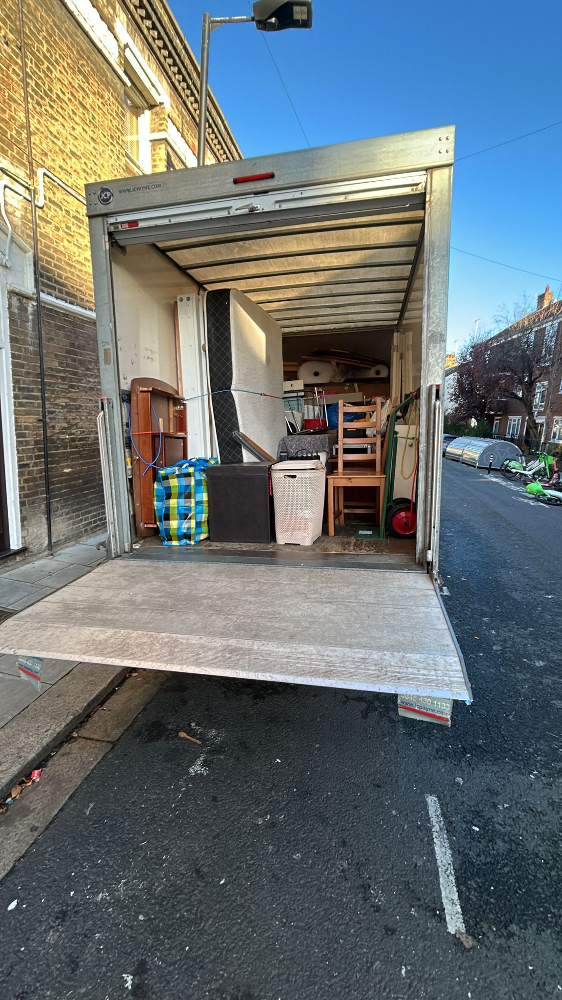
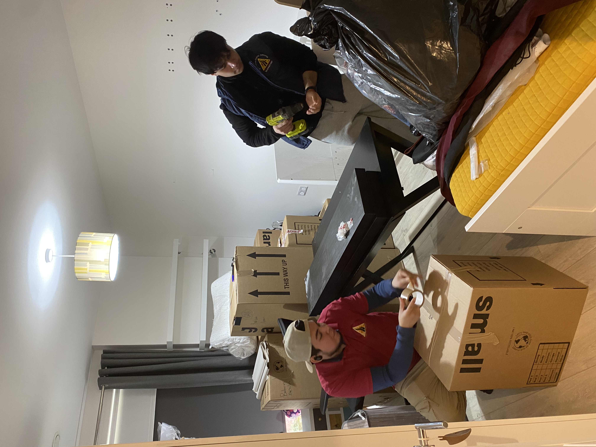
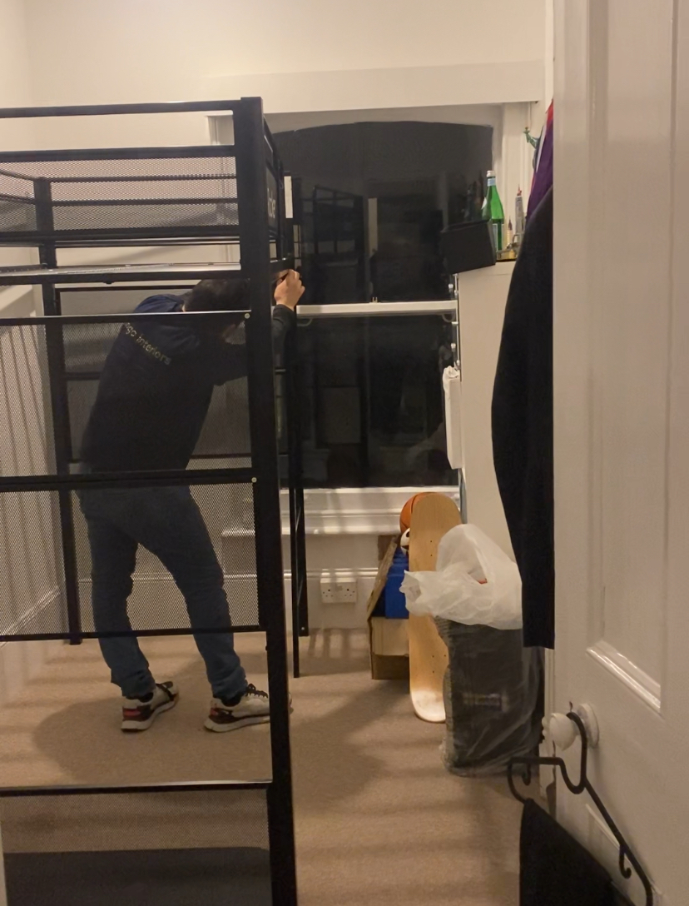

Removals Colliers Wood
Calm, structured removals Colliers Wood for houses, flats and short local relocations — planned end-to-end so the crew knows the route, the kerb window and the carry sequence before the van stops.
Retail footfall, regeneration sites and mixed-use frontages sit beside the A24 and the Northern line, so congestion is a normal constraint — not a surprise. We treat the day as logistics: realistic street timings, disciplined loading and steady handling when lifts, stairs and shared entrances slow the rhythm.
Colliers Wood on Move Day: Why Context Changes the Plan
Colliers Wood is a working neighbourhood: dense terraces and mansion blocks, high-turnover retail, service yards and newer schemes where the “front door” and the loading point are often different addresses. The Northern line and the A24 pull steady traffic, so a move that looked simple on a floorplan can crowd the kerb within minutes.
SW19 removals therefore depend on operational thinking — where the van can work, how long that position stays viable under Merton enforcement, and how carries are sequenced before pedestrians and deliveries compress the pavement. A credible moving company Colliers Wood clients trust is the one that executes locally: protected furniture, clear labelling and timings that match weekday reality. For linked moves nearby, we plan with the same discipline we apply on Wimbledon relocations and Tooting moving days, where pinch points feel familiar.
Regeneration and mixed-use schemes also change the “normal” move profile: concierge windows, goods lifts booked in slots, service yards that look generous on paper but narrow when a van and a roll cage disagree. Retail peaks add foot traffic that is indifferent to your sofa on the pavement — another reason we prefer agreed arrival bands and a clear loading story before the crew unloads the first pad.
Our Services in Colliers Wood
House & Flat Removals in Colliers Wood
House removals Colliers Wood and flat removals Colliers Wood change shape street by street: terraced frontages, mansion blocks, tight landings and newer developments each alter how you rotate furniture and stage boxes without blocking neighbours.
Crew briefings cover the last fifty metres as carefully as the inventory: lift fobs, service routes, fragile stair runs and room order so unloading restores function. Compare scope calmly on our services page — we scale crew size, vehicles and materials to the property rather than improvising at the kerb.

Man and Van Colliers Wood
Man and van Colliers Wood suits student moves, single heavy pieces, storage splits and smaller flats where a large rigid would fight the street before the stairs. Discipline stays the same: agreed arrival, a realistic kerb plan and careful handling.
Clients booking local movers Colliers Wood for short hops still get parking-aware crews — a “quick stop” rarely stays quick once retail flow and enforcement patterns appear.
Packing & Unpacking Services
A structured packing service Colliers Wood helps when completions are tight and both ends sit in busy SW19 corridors. We label logically, protect fragile runs first and sequence cartons so early hours restore function.
An unpacking service Colliers Wood can follow the same order — kitchen, bedrooms, then secondary rooms — with tidy waste handling so mixed-use bin stores do not become a second relocation.

Furniture Assembly & Disassembly
Furniture removals Colliers Wood often means flat-packs, oversized sofas and beds that will not turn on landings intact. Disassembly is planned on the way out, fixings bagged and labelled.
Furniture assembly Colliers Wood after unloading is paced to corridor space — half-built frames block neighbours fast. Nearby work follows the same standards as Earlsfield house moves and Wandsworth flat relocations, where kerbs and building rules are normal constraints.

Practical Parking & Access in Colliers Wood
Merton’s parking landscape manages demand first — removals convenience second. That is scheduling reality. Most residential kerb work sits inside Colliers Wood’s Controlled Parking Zones: the umbrella CW scheme and the sub-zones CW1, CW2, CW3, CW4 and CW5, which behave differently enough that “I have a permit” is rarely the whole story.
Across CW1, CW3 and the wider CW family, many controls commonly run 8:30am to 6:30pm — a daytime loading mindset where the crew needs a credible window, not an open-ended bay fantasy. CW5 runs later to 9:00pm, so “after work” can still be controlled. CW4 adds weekend enforcement (11am–3pm), which catches Saturday assumptions. CW2 is often felt as permit-heavy, with visitor parking limited in practice. Permit planning is therefore about timing, loading windows and what sustained loading realistically fits — not only whether a vehicle may stand.
Some newer developments near Britannia Point are locally described as permit-free in ways older terraces are not — check the exact site, not the postcode mood. Many estates still need separate housing permits or internal permissions while the street outside sits under CPZ rules. Dropped kerbs stay sensitive: enforcement is commonly 24/7, which matters when a van must sit close for weight.
School-adjacent routing needs the same rigour as CPZ hours. Near Singlegate Primary and Colliers Wood Primary, ANPR schemes can tighten access during term-time school hours — residents may use exemptions, visitors often need passes — so removals are timed operations, not sat-nav guesses.
Retail moves add choreography: Sainsbury’s and M&S car parks help only when time limits suit the job; they do not replace a residential loading plan. The Tandem Centre carries its own restrictions. On the A24, Red Route double red lines mean no stopping — loading “on the main road” is usually fiction. Double yellow lines are typically 24/7, and one-hour bays often exist to stop commuter storage — good for residents, tight for removals unless timing is honest. Always confirm signage on the day; this section is field guidance, not a substitute for what is posted at the kerb.
When clients ask what “good planning” looks like in practice, it is often boring: a start time that respects CPZ clocks, a second position identified before the first becomes unstable, and a crew briefed on which entrance is live for furniture versus boxes. If the first leg begins here and continues elsewhere, we carry that discipline forward — see South West London removals for multi-stop days where the opening chapter still sets the tone.
Why Choose Us in Colliers Wood
Evidence matters. Clients have left more than one hundred 5-star reviews on Google and over forty-five 5-star reviews on Facebook, with similar themes on other channels: careful handling, professional crews, punctual arrival and a managed day rather than a frantic one.
In a postcode where kerbs are contested, organised planning — access notes, sequencing and clear communication — cuts pressured decisions at the door. The operation is fully insured, with crews used to busy South West London logistics.
100+ five-star Google reviews; 45+ five-star Facebook reviews
Repeated notes on careful handling, professionalism and punctuality
Structured planning for CPZ, retail and school-adjacent realities
Fully insured operations with experienced South West London logistics
Start with the instant quote calculator for compact moves; send addresses and access notes early for larger homes or packing so crew size matches the day you are booking.
Planning a move in Colliers Wood?
Tell us your addresses, dates and access notes — we will respond with a clear plan, realistic timings and a professional crew briefed for SW19 realities.
Request a quote | Speak with the teamColliers Wood Moving FAQ
Do you cover flats in Colliers Wood?
Yes. We regularly move flats and apartments across the area, including properties with lifts, stair-only access and mixed-use entrances where loading must be coordinated calmly.
Can you help with parking restrictions and permits?
We plan around CPZ hours, sub-zone differences and practical kerb windows. Clients often arrange permits or visitor dispensation where required; we advise on realistic timings so loading stays orderly within local rules.
Do you provide packing and unpacking in Colliers Wood?
Yes. We can pack methodically before move day and, where requested, unpack to restore room function in a sensible order — especially helpful when both ends sit in busy SW19 corridors.
Can you assemble furniture after the move?
Yes. We can disassemble items for transport where needed and reassemble beds, wardrobes and flat-pack pieces at the destination, paced to corridor space and building access.